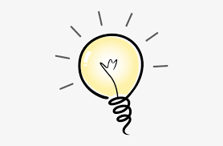
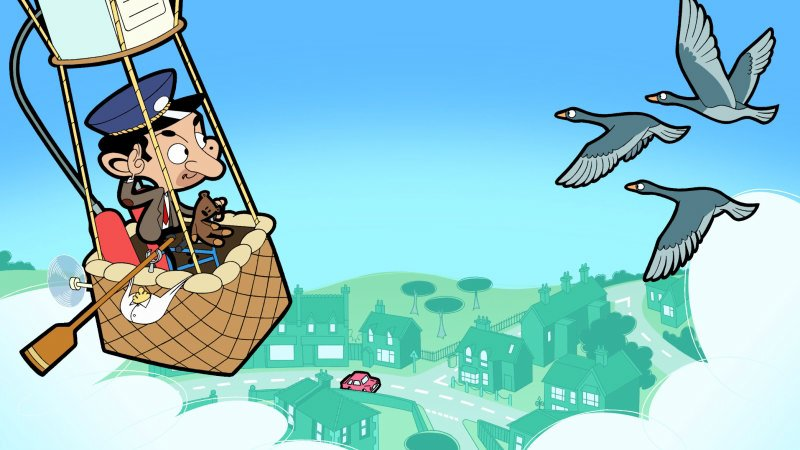

What is important about learning routines?
This activity is about talking of routines in our life.
At the end of the activity: "you will be able to recognize the most important characteristics of Simple Present Tense used when talking about routines; through differents activities as: videos, information documents and exercises; in order to be able to start to write and comunicate basic ideas in every day life."
